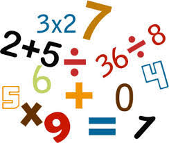

INICIO
ARITMETICA

La aritmética es el área de las matemáticas centrada en los números y en las operaciones que se realizan con ellos.
Cabe recordar que los números son los signos que permiten expresar una cantidad.
El surgimiento formal de la aritmética tuvo lugar en la Antigua Grecia a partir de un incremento del rigor de las matemáticas y del desarrollo de demostraciones.
Así se establecieron las cuatro operaciones elementales de esta rama: sumar, restar, multiplicar y dividir.
Avanzando en la complejidad de la aritmética, se puede pasar de las operaciones elementales a otras como la extracción de raíces y el cálculo de potencias. Además es posible incluir letras junto a los números con el objetivo de lograr la representación de diferentes variables.

Entre las figuras más importantes en materia de aritmética en la Antigua Grecia, podemos destacar algunas como las siguientes:
-Euclides (325 a.C – 265 a.C), que está considerado el padre de la Geometría. Realizó numerosas obras que se han convertido en pilares de la citada aritmética, como sería el caso de “Los elementos”.
-Nicómaco de Gerasa, que está catalogado como matemático neopitagórico. Uno de sus trabajos más importantes y reconocidos fue “Introducción a la aritmética”, donde, entre otras cosas, viene a dejar sobre la mesa y bien explicada la teoría de números. Tan importante fue ese trabajo que pasó a ser manual en las escuelas platónicas.
Aunque es cierto que el ábaco es uno de los instrumentos más conocidos que se han utilizado para llevar a cabo cálculos dentro de la aritmética, en la historia han existido y existen otros muchos con el mismo objetivo. Nos estamos refiriendo a los palos de conteo, a la tablilla babilónica, al ábaco inca, a la máquina de sumar…
Se conoce como alta aritmética al estudio de las propiedades y las funciones de los números. En este marco se puede hablar de la aritmética binaria (que apela al cero y al uno para representar valores), la aritmética modular (que trabaja con módulos) y la aritmética ordinal (orientada a los números ordinales), entre otras.
La aritmética de segundo orden, por otra parte, está compuesta por distintos sistemas axiomáticos que permiten la formalización de los números naturales y de los subconjuntos formados por éstos.
INICIO